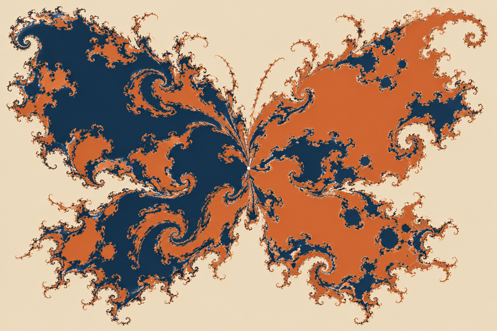

The Butterfly Effect Inside Gradient Descent
Take a neural network and freeze everything: the architecture, the data, the optimizer, the learning rate, and the training code. Copy its initial weights. In the copy, change the smallest numerical detail the computer can store, one bit in one parameter. Then train both networks deterministically.
I would expect the two runs to wobble apart. Neural-network training is sensitive, floating-point numbers are finite, and millions of updates give a small difference plenty of time to grow. I would still expect the runs to remain recognizably related.
In one recent experiment, the one-bit change sent training to a different internal destination in 47.7 percent of pairs.One bit, in this experiment. The authors flipped the least significant bit of one parameter in a representative VGG-12 setup. The 47.7 percent is not universal. The result survived CPU training designed to remove platform nondeterminism. The difference was not a GPU rolling dice. It came from feeding two almost indistinguishable starting points into the same deterministic rule.[1][4]
This sounds like the butterfly effect. But the geometry underneath it may be stranger than chaos.
The butterfly effect is often used as a poetic name for randomness. It means almost the opposite. The system can be perfectly lawful: the same state always produces the same next state. The problem is that two states too close for us to distinguish can separate until their later trajectories have almost nothing in common. Determinism tells us that the future exists inside the rule. It does not promise that finite measurements let us recover it.
That familiar story is about losing the path. Start two weather simulations a hair apart and, after enough time, the exact location of each storm becomes unreliable. Yet both trajectories may still live on the same broad climatic attractor. They forget their separation without necessarily changing the kind of long-term world they occupy.
Neural-network training adds a more unsettling possibility. What if the tiny difference does not merely change the path through weight space? What if it changes which stable solution, symmetry class, or learned function receives the trajectory at the end? Then the one-bit experiment is not only a story about magnification. It is a story about a map whose destinations are mixed together more intimately than a normal border allows.

The butterfly enters the update rule
Plain gradient descent can be written as
\[ \theta_{t+1}=\theta_t-\eta\nabla L(\theta_t). \]
Here \(\theta_t\) is every weight after step \(t\), \(L\) is the loss, \(\nabla L(\theta_t)\) is its local uphill direction, and \(\eta\) is the learning rate that decides the step size.The gradient sign. \(\nabla L\) points toward increasing loss. The minus sign walks the other way; \(t+1\) means one update later. Fix the initial weights \(\theta_0\), the loss, and the update rule, and the full sequence \(\theta_1,\theta_2,\ldots\) is fixed.
Deterministic does not mean insensitive. A pencil balanced on its tip follows deterministic physics, but moving it a hair changes where it falls. The question is what kind of prediction we lose. Ordinary chaos says nearby starts can produce rapidly separating trajectories.Trajectory. The ordered parameter states visited during training. Different trajectories can still settle in the same region. The new paper asks whether nearby starts can also change the kind of place where training ends.
There is also an important difference between rerunning an identical file and perturbing its neighbourhood. If the same bit pattern enters deterministic code twice, we should get the same run twice. That is ordinary repeatability. The paper asks a local robustness question: if the bit pattern changes by the smallest representable amount, do we still reach the same kind of outcome? A random seed can answer the first question while telling us almost nothing about the second.
The small quantity \(\varepsilon\) is the perturbation added to the initialization. The letters \(A\) and \(B\) stand for two long-term destinations, not necessarily two individual points. A destination could be a stable solution, a cycle, or a more complicated set that keeps the trajectory nearby.Attractor. A state or set of states that pulls in nearby trajectories and governs their long-term behaviour.
A map where every colour is an ending
Imagine flattening a tiny slice of the enormous initialization space into a map. Every point is a possible \(\theta_0\). Colour a point navy if training from it ends at \(A\), and orange if it ends at \(B\). All navy points together form the basin of attraction for \(A\). In plain language, a basin is the set of starting points that drain into the same ending.
Suppose our stored initialization is not an infinitely sharp point but a tiny disk of possible points. That disk represents everything we do not know or cannot control about the final digits. With a smooth boundary, most disks are boring. A navy point far from the border has a navy disk around it. Only a disk crossing the border contains both outcomes.
If the border is smooth, prediction is easy almost everywhere. Only starts close to the border are ambiguous. Measure the initialization more precisely and eventually the uncertainty ball around it sits entirely inside one colour.
A fractal boundary complicates the same picture. Its coastline sprouts bays, fingers, and smaller coastlines whenever we zoom in. A disk near that boundary can contain both colours at many scales. But “fractal” alone is not enough for the paper's claim. A thin fractal boundary can be spectacularly complicated while leaving almost every point inside a clean patch. Precision still wins once our disk becomes small enough and happens not to sit on the edge.
A fractal boundary keeps revealing finer wrinkles as we zoom in, but it can still be thin. Most points can sit in large, clean interiors. A riddled basin is harsher: every neighbourhood around a point leading to \(A\), however small, also contains a non-negligible collection of points leading elsewhere.Non-negligible. The competing basin must occupy positive volume inside every neighbourhood. Merely containing one stray point is not enough. The basin is not merely next to its boundary. It is perforated by the other basin all the way through.[6]
This is why the paper uses the phrase fat fractal.Fat versus thin. A thin fractal can have intricate structure but zero area or volume. A fat fractal occupies positive volume, so its fine structure is not confined to a negligible edge. The competing colour is not dust sprinkled on a zero-width line. It occupies real volume, yet appears in holes distributed so densely that no point in the riddled basin owns a completely private neighbourhood.
Stronger than losing the route
| Ordinary chaos | Riddled basins |
|---|---|
| Tiny errors change the detailed trajectory. | Tiny errors can change the final attractor. |
| Long-term coordinates become unpredictable. | Qualitative outcomes become unpredictable. |
| Trajectories may remain around the same attractor. | Trajectories can end in different basins. |
| Better precision extends the forecast horizon. | Better precision may barely improve outcome prediction. |
Chaos says I cannot tell you exactly how the butterfly will fly. Riddling says I may not even be able to tell you which continent it will reach.
The distinction is route versus destination. Chaos can make the route impossible to follow while leaving the destination recognizable. Riddling makes the destination itself sensitive to a perturbation that we cannot practically remove.[1]
Picture two hikers released one millimetre apart on a strange mountain. In the chaotic version, both remain inside the same valley, but their detailed walks diverge until we cannot say which boulder either will pass. In the riddled version, hidden channels send one hiker to the north sea and the other to the south. Better measurement helps with the first problem by postponing the moment when the paths become useless. In the second, the uncertainty is about which drainage system owns the starting point.
This does not mean every chaotic system is riddled, or that every network with multiple minima has riddled basins. Riddling needs a particular combination: more than one attractor, special invariant geometry, chaos within that geometry, and instability that can eject trajectories toward a competitor. The stronger conclusion earns a stronger burden of evidence.
The paper measures that sensitivity with one scaling law:
\[ f(\varepsilon)\propto\varepsilon^\phi. \]
We already know \(\varepsilon\): it is the initialization perturbation. The function \(f(\varepsilon)\) is the fraction of nearby pairs that finish in different basins. The exponent \(\phi\) tells us how quickly that fraction falls as the perturbation shrinks.Why an exponent? On logarithmic axes, a power law is a line and \(\phi\) is its slope. Near zero means nearly flat.
The useful part is not the equation's shape but the bargain it describes. Imagine reducing the perturbation a million-fold. If \(\phi=0.5\), the changed-outcome fraction falls by a factor of one thousand. Precision is buying a lot. If \(\phi=0.01\), the same heroic improvement changes the fraction only modestly. At exactly zero, the power-law factor does not fall at all.Reading the power. Shrinking \(\varepsilon\) by \(10^6\) multiplies \(f\) by \((10^{-6})^\phi\). With \(\phi=0.5\), that is \(10^{-3}\). With \(\phi=0\), it is 1.
If \(\phi>0\), buying more precision helps. If \(\phi\approx0\), making \(\varepsilon\) dramatically smaller does almost nothing. In the paper's representative deep-network analysis, the parameter-space estimate was \(\phi_p=0.000\pm0.002\) across ten orders of magnitude.The subscript \(p\). It means parameter space. The fitted exponent and its reported uncertainty are indistinguishable from zero. Ten billion times more precision produced no measurable improvement in predicting the parameter-space destination for that setup.[2]
Near zero is a measured statement, not a metaphysical one. Computers eventually run out of smaller representable perturbations, experiments cover finite scales, and a fitted exponent can carry uncertainty. The result says that across the ten orders of magnitude the authors could test, the curve was effectively flat. It does not say mathematics has proved that every still-smaller scale in every deep network must behave identically.
How a basin gets holes everywhere
The proposed mechanism begins with symmetry. Swap two hidden neurons and their outgoing weights in the same way, and the network can still compute the same function.Parameter symmetry. Several weight descriptions can encode one input-output rule. Equivalent neurons can be permuted; some architectures also allow scaling and sign symmetries. Those symmetries create invariant subspaces, special slices of parameter space that a trajectory cannot leave once it starts exactly inside them.Invariant subspace. A lower-dimensional slice of weights that the training update always maps back into itself.
Take the smallest useful example: a network with two hidden neurons. There is a slice of parameter space where both neurons have identical weights. Because the gradient sees two identical neurons in identical roles, one update preserves their equality. Another slice can encode a sign or permutation relation. These slices are not artificial walls added by the analyst. They are consequences of the network computing the same thing under certain parameter transformations.
Training trajectories do not have to begin exactly inside an invariant slice for it to matter. They can be attracted toward it from nearby points. Once close, their motion has two components: movement along the slice and movement away from it. Most of the time the second component can shrink, which makes the slice look stable. Yet certain recurring points inside the chaotic motion can be unstable in the outward direction.Transverse direction. “Along” means motion that stays inside the invariant slice. “Transverse” means motion pointing out of it. A point can be stable along one direction and unstable along the other.
Now let training be attracted toward one of those slices. Inside it, the dynamics can be chaotic. Most nearby motion may be pulled inward, while rare points on the attractor are unstable in directions pointing out of the slice. A trajectory passing close to one of those points gets ejected. If another attractor waits outside, the ejected trajectory lands in a competing destination. Repeated through chaotic motion, those escape routes puncture the original basin at finer and finer scales.
The order matters. Symmetry supplies the invariant slice. Attraction brings a positive volume of initializations toward it. Chaos makes the trajectory explore the attractor in a complicated way. Outward instability supplies escape hatches. A competing attractor gives the escaped trajectory somewhere qualitatively different to go. Remove the competitor and we may have sensitive motion without two destinations. Remove the outward instability and the original basin is not perforated. Riddling is the assembled mechanism, not a synonym for any one ingredient.
That is the classical route to riddling, and the authors establish it analytically in a minimal two-layer network. For deep networks, direct proof is much harder. They instead report intertwined destination maps, near-zero uncertainty exponents, and related signatures across the architectures, optimizers, and training protocols they tested. The right conclusion is not “all neural networks have riddled basins.” It is that riddling is a candidate organizing principle for an otherwise puzzling kind of irreproducibility.[1] Work on the edge of stability helps explain how large learning rates can weaken local stability, but riddling additionally needs competing attractors and the global geometry connecting them.[5]
The scale of that empirical search matters. The study trained roughly 500,000 networks across image and text tasks, including VGGNet, ResNet, and BERT configurations, with gradient descent, SGD, and AdamW among the tested optimizers. That breadth makes the signatures harder to dismiss as one quirky toy. It still does not turn the deep-network result into a theorem. High-dimensional attractors are difficult to identify completely, and an intricate two-dimensional slice can only reveal part of their geometry.
Different weights are not enough
There is one important trap. Two networks can finish far apart in parameter space and still make the same predictions, because their weights may differ only by a symmetry. Parameter reproducibility asks whether training reached the same region of weight space. Functional reproducibility asks whether the trained networks behave the same on inputs. The second question is usually the one a user cares about.
Suppose the first hidden neuron in one model learns the feature “curved edge” and the second learns “vertical edge.” Swap those neurons and adjust the next layer to match. Every relevant weight has moved, but the input-output function has not. A parameter-distance test can call the models different while every user sees the same answer. Scaling symmetries can create the same illusion: multiply one layer and compensate in the next, and the computation can remain unchanged.
The paper therefore introduces functional uncertainty exponents. Instead of checking which parameter basin each run reached, it measures whether nearby starts produce models that disagree on predictions. One measure is prediction churn, the fraction of examples on which two models choose different labels.Churn. Disagreement on 29 of 1,000 inputs is 2.9 percent churn. It looks at decisions, not weight distance. In the representative experiment, this functional difference also stopped shrinking as the initialization perturbation became smaller. That does not make parameter and function space identical. It shows that the instability was not only cosmetic relabelling of neurons.[2]
The distinction stays important even here. A near-zero functional exponent does not by itself prove that function space contains literal riddled basins. The paper presents it as a practical diagnostic: predictive differences fail to diminish as initialization precision increases. In the representative CPU-trained analysis, prediction churn plateaued around 2.9 percent and the functional exponent was statistically indistinguishable from zero. Other similarity measures showed the same scale-insensitive pattern.
This matters whenever a model is trained again. A production retrain can introduce prediction churn even when the recipe barely changes. A fixed random seed proves that one exact address can be revisited; it does not show that the surrounding neighbourhood is stable. A benchmark score from one checkpoint may hide a distribution of other models that the same training procedure could have produced. A safety behaviour found in one checkpoint is evidence about that checkpoint, not an automatic guarantee about its retrained sibling.
Imagine a loan model retrained after a routine data refresh. Aggregate accuracy stays at 92 percent, so the dashboard remains green. Yet the new model reverses decisions for three percent of applicants, with the changes concentrated near a policy boundary. Nothing in the mean score tells us who moved or why. Or imagine a language model whose refusal behaviour was carefully tested in one checkpoint. A sibling run can match the benchmark average while exchanging a small set of safe answers for unsafe ones. Reproducibility is about the identity of those changed cases, not only the height of one summary metric.
This also changes how to interpret a seed. A seed records the pseudorandom choices used to construct one run: initialization, batch order, dropout masks, and perhaps augmentation. Preserving it is valuable for debugging. But a seed is one coordinate, not a certificate that nearby coordinates agree. Neighbourhood-level stability needs perturbation tests that deliberately move the least significant bits, batch order, or other controlled parts of the training state and then compare the outcomes.
The practical response is not to abandon reproducibility. It is to test the object we actually deploy: the training procedure, not only one frozen model. High-stakes systems need evaluation across independently trained checkpoints. Ensembles can average structural training variability as well as ordinary prediction noise. Reports should include the spread of outcomes, disagreement rates, and failure cases across runs, not only a mean score and a seed.
A useful evaluation would train several models under the intended recipe, compare their overall scores, and then inspect where their predictions disagree. For a classifier, that can mean churn by subgroup and by confidence. For a generative model, it can mean repeated safety and capability evaluations across checkpoints rather than repeated prompts to one checkpoint. Those two repetitions answer different questions: inference sampling studies variability after training, while independent retraining studies variability in the model that training produces.
There may also be a real trade-off. In the tested settings, lowering the learning rate improved reproducibility but reduced learning effectiveness. The learning rates with the best training performance often sat near the riddling-like regime.[4] That is evidence from these experiments, not a law that accuracy must always purchase instability. It does mean that “just use smaller steps” can change the model we are able to train, not merely make the same model more reliable.
We usually treat the random seed as an address. If we preserve it carefully enough, we expect training to return to the same neighbourhood. Riddled basins suggest that the address may be written on a coastline that produces new coastlines whenever we zoom in.
The butterfly effect inside gradient descent is therefore not merely that one bit can change the route. It is that there may be no practical scale at which that bit finally stops changing where the route ends.
References and links
- Andrew Ly and Pulin Gong, “Fractal basin geometry and the limits to predictability and reproducibility in deep learning”, Nature Machine Intelligence, 2026.
- Andrew Ly and Pulin Gong, searchable arXiv version and supplementary material, revised 2026.
- Andrew Ly and Pulin Gong, official experiment and analysis code, 2026.
- University of Sydney, “Sydney researchers uncover a hidden limit to AI predictability”, 6 November 2026.
- Jeremy M. Cohen et al., “Gradient Descent on Neural Networks Typically Occurs at the Edge of Stability”, ICLR 2021.
- Edward Ott et al., “Scaling behavior of chaotic systems with riddled basins”, Physical Review Letters, 1993.